Mon métier
Je voulais être architecte d'intérieur, mais la vie n'est pas comme les Sims : alors je crée sur la peau.
Tatoueuse · Frouard, à 15 min de Nancy
Des tatouages mélancoliques qui racontent ton histoire : traits fins, encre noire, couleurs douces et vieillies. Sur mesure, depuis 2018.
Mon approche
Depuis 2018, je tatoue à Frouard, aux portes de Nancy. Des lignes fines, de l'encre noire, des couleurs douces et vieillies. Un tatouage accompagne un passage, une étape, un chemin : alors avant de dessiner, je prends toujours le temps de t'écouter.
— Malou
Je voulais être architecte d'intérieur, mais la vie n'est pas comme les Sims : alors je crée sur la peau.
J'ai grandi à la ferme et je ne peux pas vivre sans mon petit zoo.
Grosse maniaque et pleine de tocs sur les ambiances. Tu verras, au salon, rien n'est laissé au hasard.
Les biscuits Baiocchi. Ramène-m'en et je fonds.
L'automne, pour ses couleurs vieillies et sombres… tout moi.
Mon prénom signifie « noir » et mon nom « brillant » : dualité, toujours.
Ma méthode
Quelques minutes pour poser les premières informations : ton idée, l'emplacement, la taille, tes disponibilités. Je découvre chaque demande le mardi, pour comprendre ton univers et tes envies. Tu reçois ensuite un devis et toutes les infos pratiques.
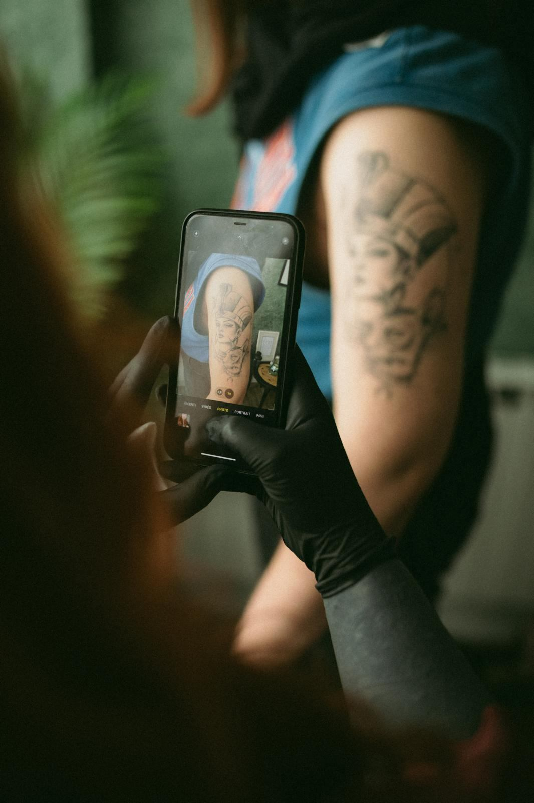
Je ne montre pas le dessin avant la séance : cela me permet de rester entièrement concentrée sur ton projet, sans m'éparpiller. Le jour J, on prend tout le temps de le vérifier et d'ajuster les détails, jusqu'au coup de cœur. Besoin de co-créer avant de t'engager ? La session dessin d'1 h (50 €) est là pour ça.
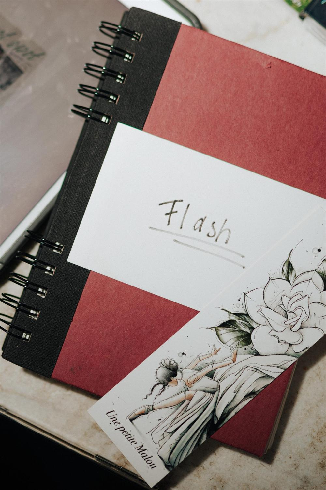
Pauses quand tu veux, discussion ou simple playlist selon ton humeur : dans mon espace privé, tout est pensé pour que tu te sentes bien. Une seule exigence : rester bien immobile, pour la qualité du trait et pour ta sécurité.
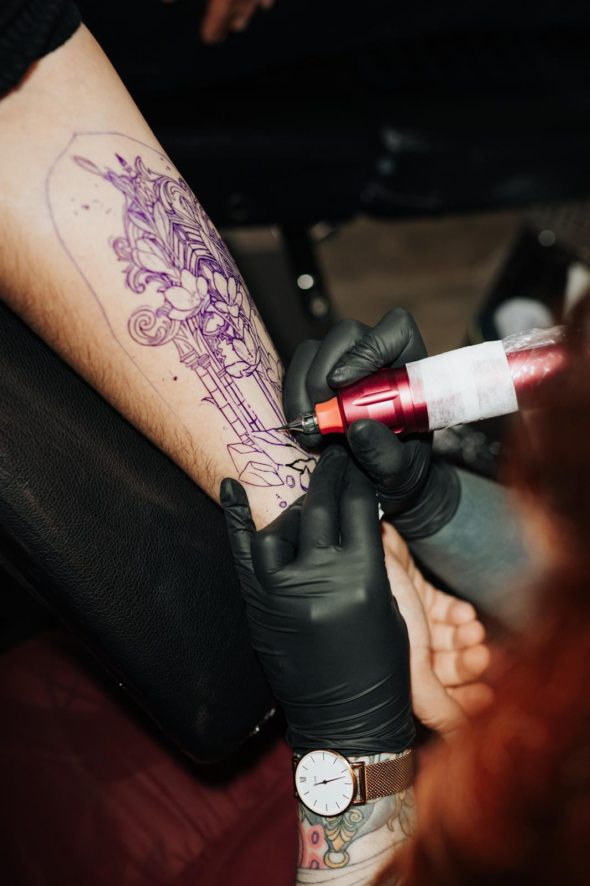
Trois semaines minimum. Un lavage par jour au savon pH neutre, pas de soleil, pas de piscine, et on arrête de tartiner son tatouage 15 fois par jour. Un doute pendant la cicatrisation ? Écris-moi : il n'y a pas de question bête.
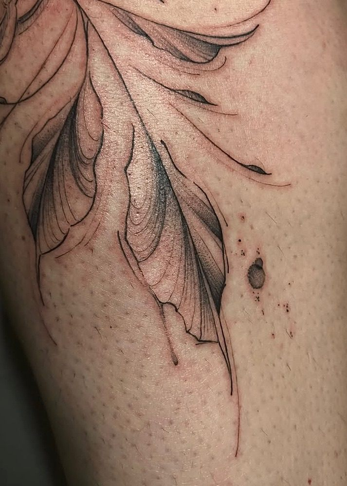
Prestations & tarifs
Chaque projet est unique : le tarif dépend de la taille, de l'emplacement et du niveau de détail. Tu reçois un devis clair après l'étude de ta demande.
8
années d'encre
depuis 2018
4,9/5
note Google
moyenne des avis
51
avis clients
sur Google
15min
de Nancy
à Frouard
Créations
Portraits, floral, ornemental, lettrage… Chaque pièce est dessinée pour une personne et son histoire. Clique pour agrandir.
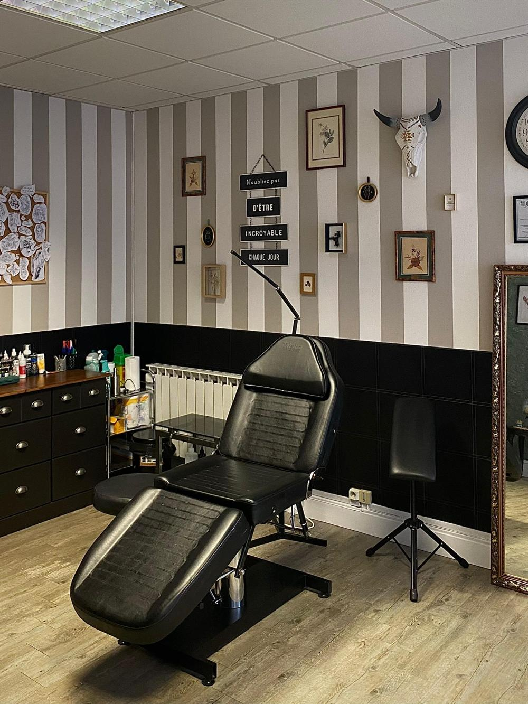
L'atelier
Murs vert marbré, papier rayé, cadres dorés, miroir ancien et flashs épinglés : le salon est pensé comme un espace privé, calme et respectueux, pour que tu te sentes à ta place avant même la première ligne.
« Le salon est sublime, l'hygiène est au top. » Carole G., avis Google
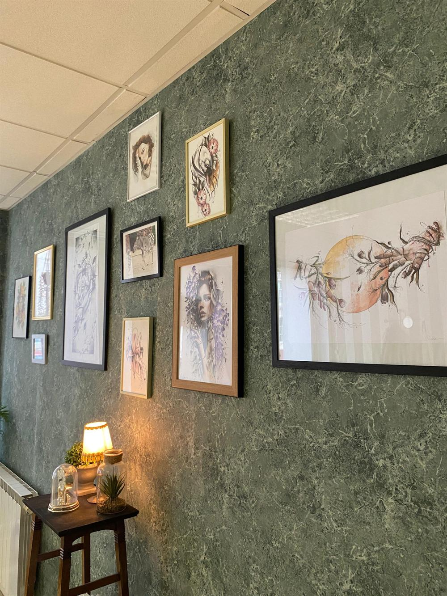
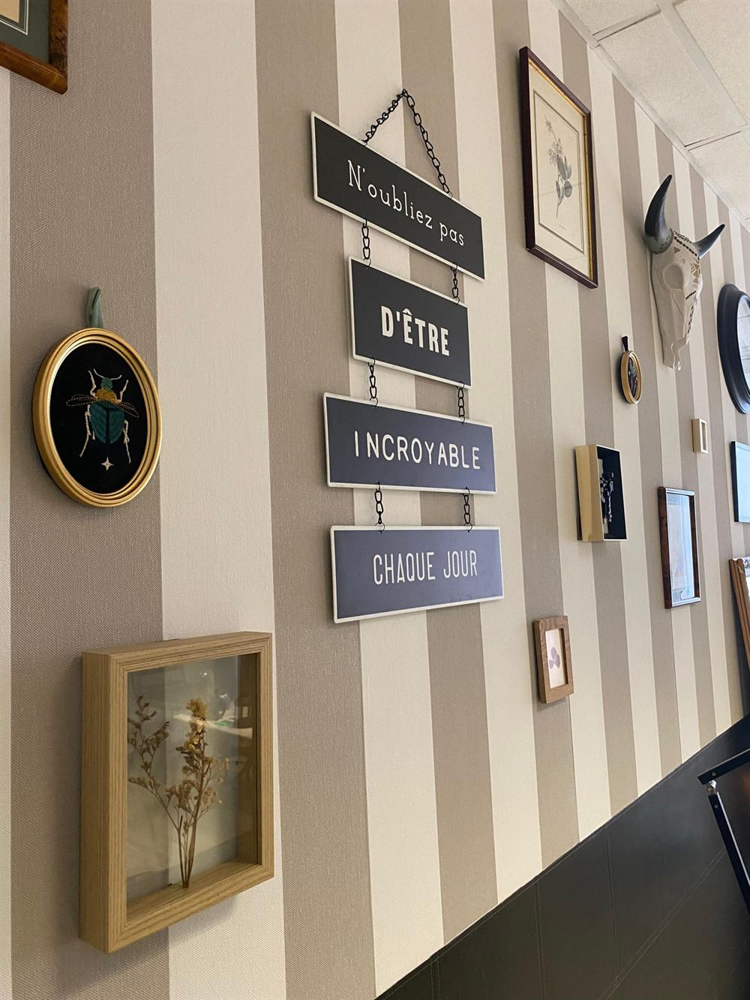
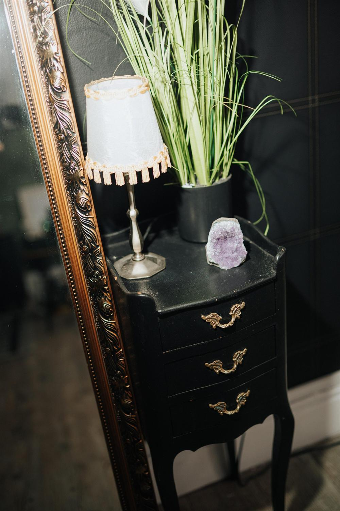
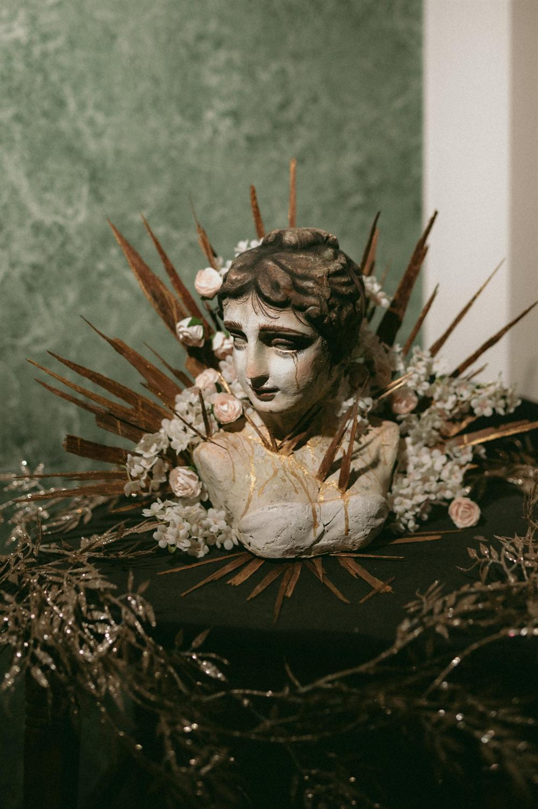
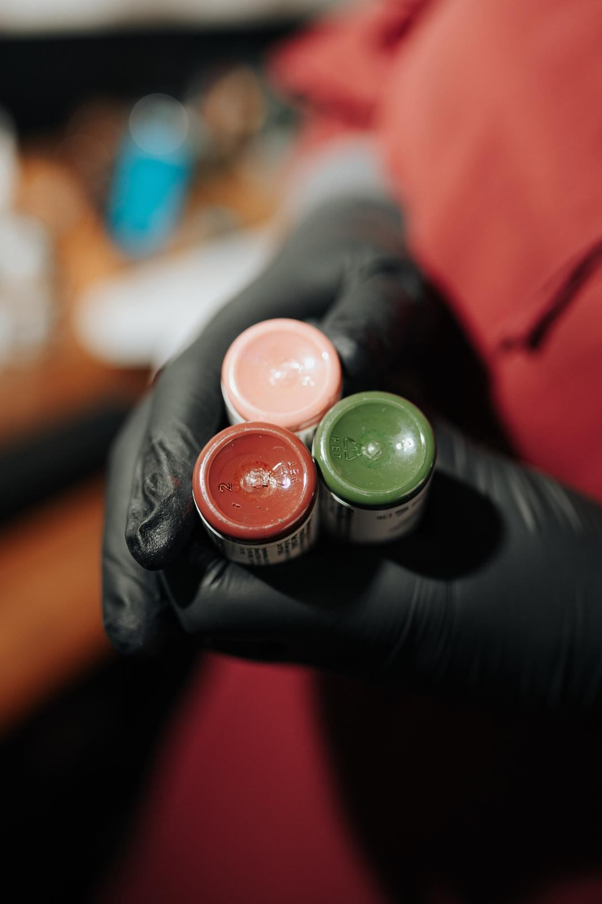
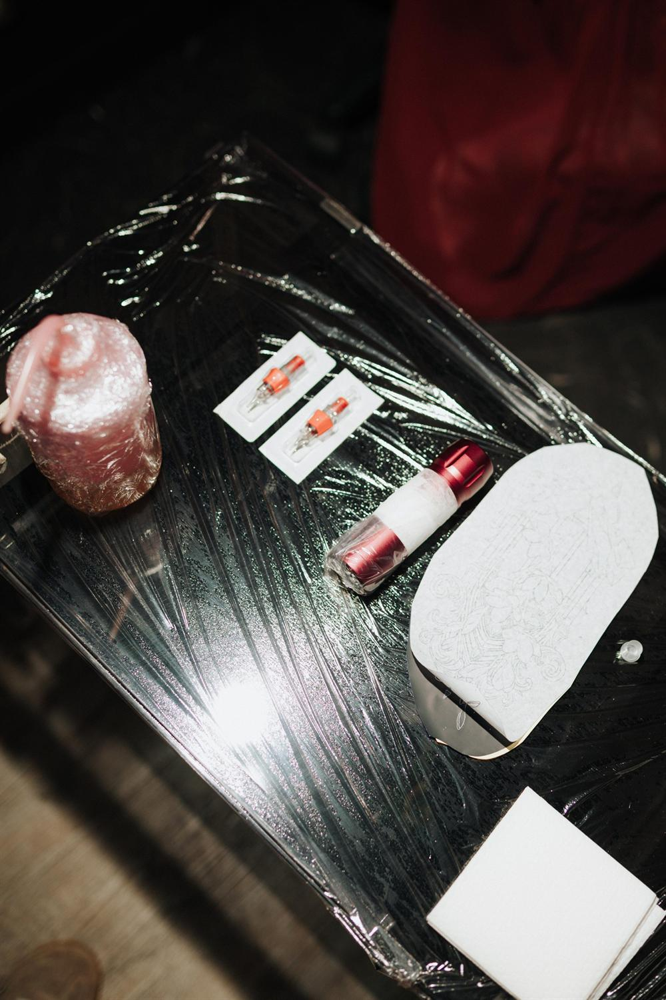
Avant & après
Dors bien, mange avant. Ton corps aura besoin d'énergie. Viens reposé(e) et bien hydraté(e).
Pas d'alcool ni de drogues la veille, pendant et après le tatouage : c'est mieux pour la cicatrisation.
Prévois de quoi t'occuper : livre, musique, écouteurs, de quoi boire et grignoter si besoin.
Un lavage par jour au savon pH neutre. Crème ou huile adaptée seulement en cas de fortes démangeaisons.
Évite le soleil, les bains prolongés, piscines, saunas, hammams et tout frottement.
Trois semaines minimum de cicatrisation. Un doute ? Écris-moi, mieux vaut demander que rester dans l'inquiétude.
Ils en parlent
4,9/5
51 avis Google
★★★★★
Mélanie est une super tatoueuse très talentueuse en plus d'être une super belle personne! J'ai réalisé avec elle le tatouage de mon bras en entier, elle est à l'écoute, attentive et sait donner un conseil de qualité. Traits fins maîtrisés, style assumé, vous pouvez y aller l'esprit serein et vous en ressortirait avec un magnifique tatouage en plus d'avoir passé un bon moment (oui oui c'est promis!) :)
Kathleen Siegel JacquardAvis Google · visite en octobre
★★★★★
Une tatoueuse exceptionnelle ! Autant professionnellement que humainement. Je suis absolument ravie de tous mes tatouages. Elle est à l’écoute et surtout extrêmement talentueuse. Elle a su comprendre exactement ce que je voulais et les résultats sont encore plus beaux que ce que j’imaginais. Le travail est minutieux, précis et réalisé avec beaucoup de soin. Je lui fais totalement confiance. Je recommande les yeux fermés et je reviendrai sans hésiter pour mes prochains tatouages !
TaniaAvis Google · visite en août
★★★★★
C'est une superbe tatoueuse ! Elle est très sympa et maîtrise très bien la précision. Elle as pris le temps de comprendre mon projet. N'hésitez pas à faire un tour, vous ne serez pas déçu ! Je suis très contente de mon tatouage !
KatiaAvis Google · visite en août
★★★★★
Une personne avec un talent incroyable ! Une petite Malou a vraiment un talent immense, de la créativité, c'est une artiste complète et incroyable ! Je suis absolument ravie de mon tatouage, je vais y retourner les yeux fermer ! On se sent bien sous ses aiguilles, elle est très bienveillante et sympathique. Le salon est sublime, l'hygiène est au top. Elle donne des conseils qui sont vraiment bien utiles que ce soit pour le dessin, pendant le tatouage ou meme pour les soins. Je recommande une petite Malou les yeux fermés. Merci infiniment pour l'incroyable travail que tu as fait et merci d'avance pour les prochains projets que tu feras sur moi ! À bientôt !
Carole GrangeAvis Google
★★★★★
Une tatoueuse merveilleuse, rigolote ! J'étais assez anxieuse par rapport à la zone à tatouer mais elle m'a très vite mise à l'aise et elle est d'une douceur et d'une empathie envers ses clients ! Bref, elle fait vraiment tout pour qu'on se sente bien et que les choses se fassent à votre rythme ! Elle prend vraiment le temps pour que tout se passe bien de A à Z ! Je recommande +++
ManonAvis Google
★★★★★
Tous mes tatouages ont toujours été réalisés par Mélanie. C’est une personne à l’écoute, minutieuse dotée d’un talent immense !! Elle s’est toujours adaptée à mes styles de projets et mes tatouages sont une partie de moi que j’aime énormément. Je remercie Mélanie pour ce travail incroyable qu’elle a toujours fournit apres des années !
Lola MaalejAvis Google
★★★★★
Pas seulement super talentueuse, mais aussi une personne formidable et très à l’écoute.
Evan AljundiAvis Google
★★★★★
Une formidable artiste, très à l'écoute, pleine de très bons conseils. Déjà 4 tattoos et toujours aussi heureuse du résultats !!!
Carole LucasAvis Google
★★★★★
Très bonne expérience et un travail de qualité. Mélanie est douce, prend le temps de comprendre ce que l'on souhaite tout en y mettant sa touche. Je la recommande +++. Si je me refais un tatoo un jour, ça sera avec elle.
Julie ThomasAvis Google
★★★★★
Une patte graphique en or. Une personne à l'écoute et délicate. Une artiste ! N'hésitez pas à contacter Malou pour vos projets, elle réussit à sortir ce que vous avez en tête !
Chloe BruandAvis Google
★★★★★
Déjà plus de 3 ans que je suis venue me faire tatouer… Un moment de partage, en confiance, et un tattoo magnifique et très symbolique pour moi. N'hésitez pas à faire confiance à Mélanie pour votre projet, elle saura vous conseiller, prendra le temps qu'il faut… tout ça dans une safe place.
Tiffany RohrAvis Google
★★★★★
Un, deux, trois… tattoo, elle sait ce qu'elle fait, de très bon conseil, et l'ambiance est agréable, même pour les introvertis comme moi. Merci.
Laura BeaucousinAvis Google
★★★★★
Les prints sont superbes et les tatouages sont magnifiques !
Plume FilanteAvis Google
Questions fréquentes
Dors bien et mange avant ton rendez-vous : ton corps aura besoin d'énergie. Pas d'alcool ni de drogues la veille, pendant et après le tatouage, pour une bonne cicatrisation. Prévois de quoi t'occuper pendant la séance (livre, musique, écouteurs), de quoi boire et grignoter si besoin.
Tu peux demander des pauses si nécessaire, et je peux aussi en proposer. Rester immobile est important pour la qualité du tatouage et pour ta sécurité. La séance se déroule dans un espace privé, calme et respectueux. Tu peux discuter, cela ne me dérange pas, au contraire. Pour les plus réservés, pas de panique : je peux me contenter de ma playlist.
Pour protéger mon travail et garantir la qualité de mes créations, je ne fournis pas les dessins avant la séance. Cela me permet de me concentrer pleinement sur ton projet et de te proposer un motif unique. Le jour du rendez-vous, nous prenons tout le temps nécessaire pour vérifier le dessin ensemble, ajuster les détails et m'assurer qu'il te crée un vrai coup de cœur. Si tu veux un temps supplémentaire pour co-créer avant de t'engager, je propose des sessions dessin d'une heure (50 €).
La cicatrisation dure minimum 3 semaines. Lave le tatouage une fois par jour avec un savon pH neutre et applique une crème ou huile adaptée seulement en cas de fortes démangeaisons (on arrête de tartiner son tatouage 15 fois par jour, cela peut macérer ou rendre la peau trop grasse). Évite le soleil, les bains prolongés, piscines, saunas, hammams et tout frottement.
Oui, sous conditions : choisis quelqu'un de confiance, bienveillant, qui ne perturbe pas la séance, ne fait aucun commentaire déplacé, ne touche pas le matériel et respecte l'hygiène et la concentration de chacun. Un environnement calme garantit la qualité du travail et ton confort. Je me réserve le droit de demander à un accompagnateur de quitter le salon si son comportement perturbe la séance.
Réservation
Pas de planning automatique ni de robot : une demande bien remplie, que je lis chaque mardi. Je reviens vers toi par e-mail avec un devis et toutes les infos pratiques.
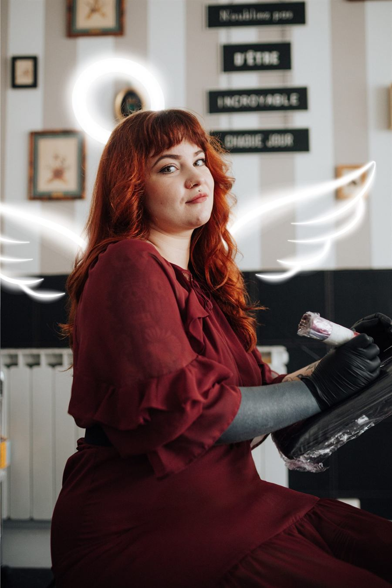
Nous trouver
Une petite Malou Tattoo
73 rue de l'Hôtel de Ville
54390 Frouard
unepetitemaloutattoo@gmail.com
| Lundi | Fermé |
|---|---|
| Mardi | Fermé · jour des demandes de rendez-vous |
| Mercredi | 10h00 – 18h00 |
| Jeudi | 10h00 – 18h00 |
| Vendredi | 10h00 – 18h00 |
| Samedi | 10h00 – 18h00 |
| Dimanche | Fermé |